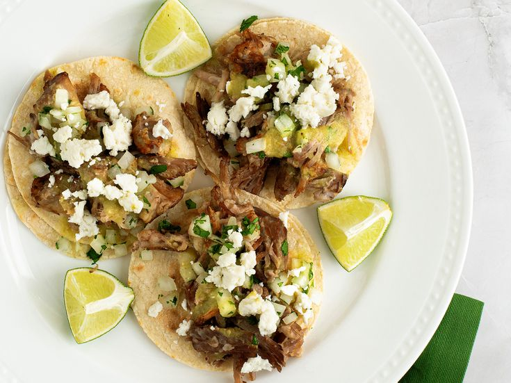

Pork Carnitas

Description
We've been making carnitas together since Avery lived in her old place, but we only recently started pan frying the slow cooked pork, and that has made all the difference in the world!
Ingredients
- 1/4 cup vegetable oil
- 4 pounds pork shoulder, cut into several large pieces
- 3 tablespoons kosher salt
- 1 onion, chopped
- 1 clove garlic, crushed
- 3 tablespoons lime juice
- 1 tablespoon chili powder
- 1/2 teaspoon dried oregano
- 12 teaspoon ground cumin
- 4 (14.5 ounces) cans chicken broth
Instructions
- Heat the vegetable oil in a large Dutch oven over high heat. Season the pork shoulder with salt, then arrange the pork in the Dutch oven. Cook until browned on all sides, about 10 minutes. Add the onion, garlic, lime juice, chili powder, oregano, and cumin. Pour in the chicken broth, and bring to a boil. Reduce heat to medium-low, cover, and continue to simmer until pork is very tender, about 2 1/2 hours.
- Preheat the oven to 400 degrees F (200 degrees C).
- Transfer the pork shoulder to a large baking sheet, reserving the cooking liquid. Drizzle with a small amount of the reserved cooking liquid and lightly season with salt.
- Bake the pork in the preheated oven until browned, about 30 minutes. Drizzle more of the cooking liquid on the meat every 10 minutes, and use two forks to shred the meat as it browns.